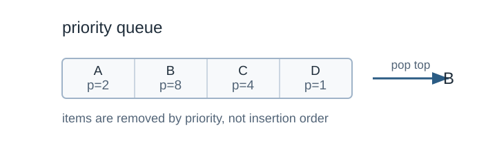

Priority Queue
คำอธิบาย
Priority Queue เป็นส่วนเสริมของ queue โดยเพิ่มคุณสมบัติดังนี้
ทุก ๆ สมาชิกจะมี priority ของตนเอง
สมาชิกที่มี priority สูงสุดจะถูก dequeue ก่อนสมาชิกที่มี priority ต่ำกว่า
หากมีสมาชิกที่ priority เท่ากัน จะถูกนำออกตามลำดับเข้าของ queue
ใน priority queue สมาชิกที่มี priority สูงสุดจะถูกนำออกก่อน

Priority queue removes the highest-priority item first. Original diagram for this guide.
Operations
insert(item, priority): เพิ่มสมาชิกพร้อมระบุ prioritygetHighestPriority(): คืนค่าสมาชิกที่มี priority สูงสุดdeleteHighestPriority(): นำออกสมาชิกที่มี priority สูงสุด
Implementation
Heap: สามารถใช้ heap ในการสร้าง priority queue ได้
STL: ใน STL นั้นมี priority_queue ให้ใช้ได้เลย
โดยปกติ priority_queue<int> ใน C++ เป็น max-heap
คือค่ามากที่สุดอยู่ด้านบน ถ้าต้องการ min-heap ให้ใช้
greater<int>
operation |
STL |
time complexity |
|---|---|---|
เพิ่มข้อมูล |
|
O(log n) |
ดูค่าบนสุด |
|
O(1) |
ลบค่าบนสุด |
|
O(log n) |
จำนวนสมาชิก |
|
O(1) |
ตัวอย่าง (STL)
#include <bits/stdc++.h>
using namespace std;
int main() {
priority_queue<int, vector<int>, greater<int>> q;
q.push(3);
q.push(2);
q.push(15);
q.push(5);
q.push(4);
q.push(45);
printf("top %d\n", q.top());
q.pop();
printf("top %d\n", q.top());
q.pop();
printf("top %d\n", q.top());
return 0;
}ตัวอย่างด้านบนเป็น min-heap เพราะใช้ greater<int> ดังนั้น
top() จะคืนค่าที่น้อยที่สุด
ใช้กับ pair
ในการเขียน Dijkstra มักเก็บ pair เป็น (distance, vertex)
และใช้ min-heap
priority_queue<
pair<int, int>,
vector<pair<int, int>>,
greater<pair<int, int>>
> pq;
pq.push({0, start});เมื่อใช้ pair การเปรียบเทียบจะดูสมาชิกตัวแรกก่อน ถ้าเท่ากันจึงดูสมาชิกตัวที่สอง
ข้อควรระวัง
priority_queueไม่มี operation ลบค่าที่อยู่กลาง heapถ้าข้อมูลที่อยู่ใน queue เก่าแล้ว ให้ใช้วิธี lazy deletion เช่น pop ทิ้งเมื่อพบว่าไม่ตรงกับ distance ปัจจุบัน
ถ้าต้องการเรียงข้อมูลทั้งหมด ใช้
sortง่ายกว่าถ้าต้องการดึงค่าน้อยสุดและลบค่าใดก็ได้ อาจใช้
setหรือmultisetแทน